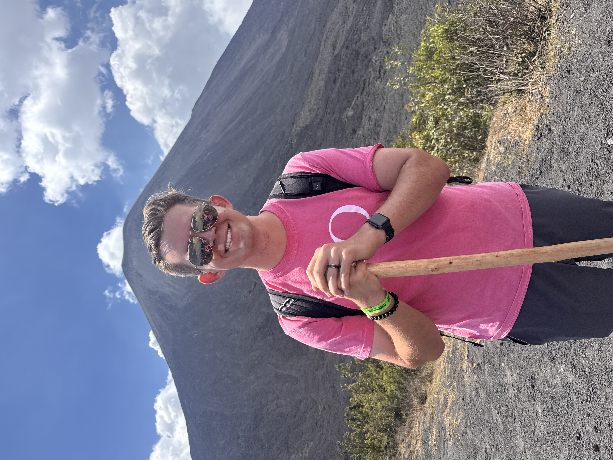

Senior Site Reliability Engineer
Five years keeping distributed systems alive — from Fidelity to JPMorgan Chase. I specialize in reliability, observability, and making infrastructure a lot less dramatic.
Experience
JPMorgan Chase
Plano, TX
Site Reliability Engineer III
Fidelity Investments
Westlake, TX
Senior Site Reliability Engineer
Fidelity Investments
Westlake, TX
Site Reliability Engineer
Fidelity Investments
Westlake, TX
Systems Engineer
Fidelity Investments
Westlake, TX
Problem Management Intern
Skills & Certifications
Solutions Architect Associate
2022
Cloud Practitioner
2022
B.S. Computer Engineering
Texas A&M University — 2021
Contact
Open to new opportunities, collaborations, or just a good conversation.